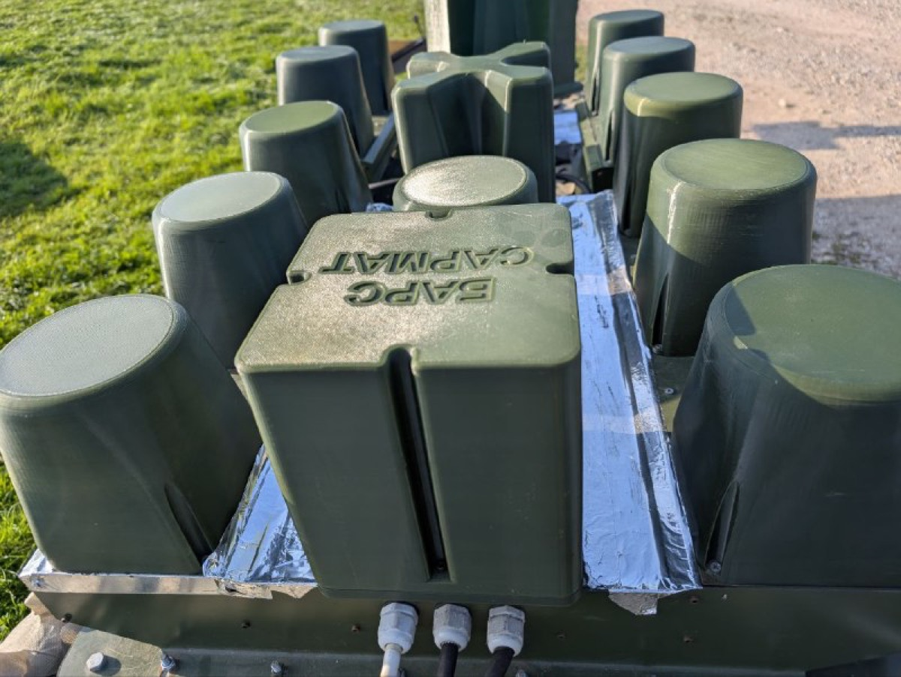
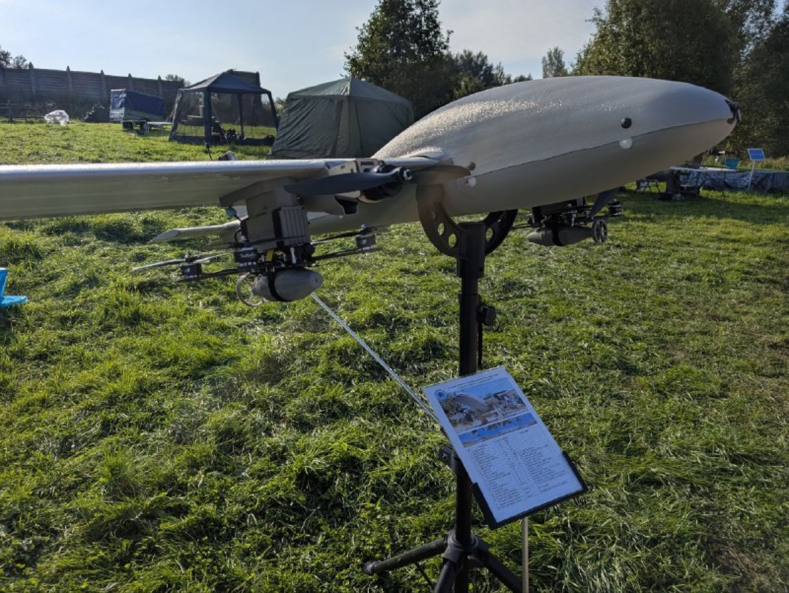
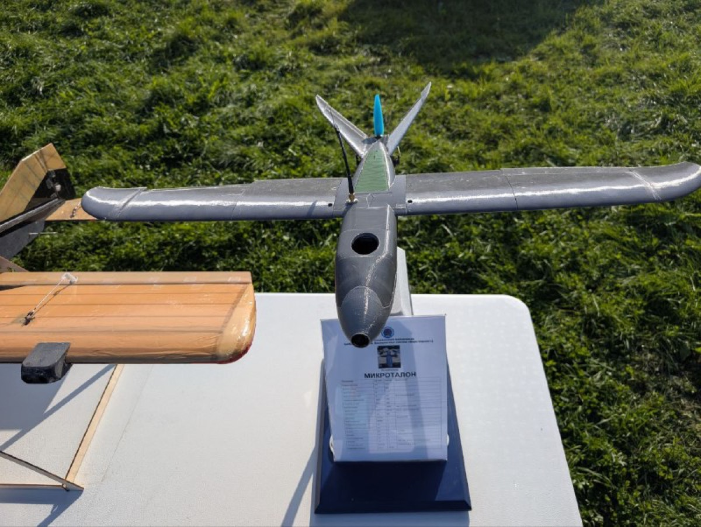
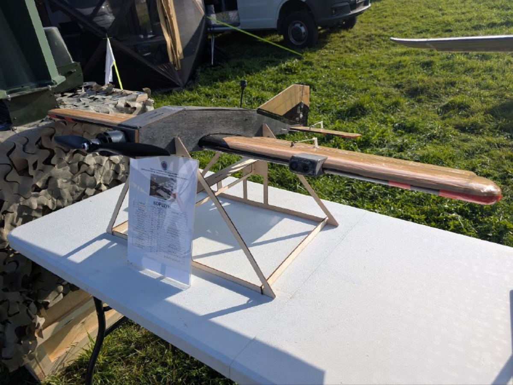

Company profile · РОЙ.МАРКЕТ investigation
At a glance
Ownership & corporate history
| Value | As of | Note |
|---|---|---|
| Рогозин Дмитрий Олегович (Начальник Центра) | 2026-09-19 | The unit's own site names him 'Начальник Центра'; the 2024 posts call him 'командир' of the detachment ([s7693]). No legal-entity registration for the unit is on file: a military volunteer formation, not a company. [s7687] |
Workforce & production scale
| Headcount | As of | Note |
|---|---|---|
| более 1000 бойцов | 2026-09-19 | Self-reported on the home page under 'Результаты работы Центра за 2025 год'; claim not independently confirmed. [s7686] |
Self-reported marketing claims
Первый в России Центр специального назначения, занимающийся разработкой, боевой апробацией и применением роботизированных электронных комплексов и системThe first Special Purpose Centre in Russia engaged in the development, combat approbation and use of robotic electronic complexes and systems. Self-description on the unit's own site (bars-sarmat.ru home page, captured 19.09.2026): a military unit that states 'разработка' (development) as part of its function, next to combat approbation. — 2026-09-19 [s7686]
400 + апробированных на передовой разработок российского ОПК и “народного ВПК”400+ developments of the Russian defence industry and the "people's military-industrial complex" tested at the front. 'Результаты работы Центра за 2025 год' block on the home page. Same «народный ВПК» framing Проект «Архангел» uses since 2023. — 2026-09-19 [s7686]
Серийное производство сотен единиц средств радиоэлектронной борьбы и связиSerial production of hundreds of electronic-warfare and communications units. Same results block on the home page; the unit claims its own production, not only testing. No maker is named on the page. — 2026-09-19 [s7686]
Около 350 единиц уничтоженного вооружения и военной техники, а также группы пехоты противникаAbout 350 units of destroyed enemy weapons and military equipment, plus infantry groups. 2025 results block on the home page, alongside 'более 1000 бойцов' and 'Свыше 100 сбитых разведывательных и ударных беспилотных самолетов противника'. Unit's own claim, not independently confirmed. — 2026-09-19 [s7686]
от 210 000 рублейFrom 210,000 roubles a month. Monthly pay advertised on the home page; the FAQ ([s7683]) grounds it in art. 13.2 of Federal Law 76-FZ and a one-year contract. On 27.09.2024 the channel gave the figure as 'от 205 000 рублей' plus a one-off 500 000 рублей payment after the first stage ([s7692]). — 2026-09-19 [s7686]
Она составит 500 000 рублей.It will be 500,000 roubles. @russian_shock_volunteer_brigade msg 1618 (27.09.2024): one-off payment to those who sign the contract, paid after the first service stage. — 2024-09-27 [s7692]
Совместно с проектом Архангел и Батальоном Сармат(Рогозина Д.О.), прорабатыватся методика и техническое оснащение совместного проекта по защите объектов критически важной инфарструктуры.Together with Проект Архангел and the Sarmat battalion (Rogozin D.O.), a methodology and technical equipment for a joint project protecting critically important infrastructure are being worked out. @russian_shock_volunteer_brigade msg 1668 (18.10.2024), announcement by the centre «ЗОВ-АА»; invites manufacturers to 'апробация изделия', one event 'при поддержке Правительства Республики Татарстан в феврале 2025г.' — 2024-10-18 [s7696]
Близкие проекту "Архангел" волонтёрские инженерные сообщества и учебные центры БпЛА начинают тесное взаимодействие с нашим добровольческим военно-техническим отрядом "БАРС-САРМАТ".Volunteer engineering communities and UAV training centres close to the Arkhangel project are starting close cooperation with our volunteer military-technical detachment BARS-SARMAT. @russian_shock_volunteer_brigade msg 1683 (21.10.2024), first-person post ('нашим ... отрядом'); the unit's own channel names Архангел's network as an intended feeder. — 2024-10-21 [s7697]
при поддержке "БАРС-Сармат" провели испытания изделия народного ОПК - "Горыныч 2.0".with the support of BARS-Sarmat, tested the people's-defence-industry product Gorynych 2.0. Post carrying Архангел's sign-off (26.11.2024), listing uses including 'Поражение беспилотников со связью Старлинк или с оптоволоконным кабелем путем деформации стеклопластиковых и др. элементов конструкции' and 'Плановый поджог ... объектов'; 'Серийное производство доступно уже сейчас!'; supplies routed to '@KPOT1BOT'. Maker not named in the post. — 2024-11-26 [s7699]
Индивидуальный РЭБ " ЩИТ - И " прошел совместную апробацию с Б.А.Р.С - Сармат и Проектом Архангел.The individual EW set SHCHIT-I passed joint approbation with B.A.R.S-Sarmat and Project Arkhangel. @russian_shock_volunteer_brigade msg 1988 (15.01.2025): five-item kit covering 97 to 1020 MHz, suppression 'зафиксировано на расстоянии 310 метров', first kit to be handed to a named-later general at the front. Links to a TASS article; maker not named. — 2025-01-15 [s7700]
Особый интерес вызвал раздел по новым технологиям «Гермеса» в управлении роботами и группами роботов через Интернет.Particular interest was drawn by the section on Germes's new technologies for controlling robots and groups of robots over the Internet. Post of 16.02.2025 (Germes-side text, carried on the Sarmat channel): Germes trained БАРС САРМАТ instructors in soldering, frequency setting and ППРЧ, and gave the unit new interference-resistant comms kits and an 8-metre mast. Hashtags #сармат #барс #Рогозин. — 2025-02-16 [s7701]
Web & social presence
Images




Principals & persons of interest
Open questions
Sources cited in this profile
| ID | Type | Locator | Captured | As of |
|---|---|---|---|---|
| s7682 | site capture | site capture (SITE_6154168283_20260919_fond-sarmat-page.html) | 2026-09-19 | — |
| s7686 | site capture | site capture (SITE_barssarmat_20260919_home.html) | 2026-09-19 | — |
| s7687 | site capture | site capture (SITE_barssarmat_20260919_komandovanie.html) | 2026-09-19 | — |
| s7688 | site capture | site capture (SITE_barssarmat_20260919_mintrans.html) | 2026-09-19 | — |
| s7692 | Tgpost | Tgpost (TGPOST_20240927_russian_shock_volunteer_brigade-1618-bars-sarmat-pay-500k.txt) | 2024-09-27 | — |
| s7694 | Tgpost | Tgpost (TGPOST_20241017_projectArchangel-5502-arkhangel-joins-sarmat.txt) | 2024-10-17 | — |
| s7696 | Tgpost | Tgpost (TGPOST_20241018_russian_shock_volunteer_brigade-1668-zov-aa-joint-project-arkhangel.txt) | 2024-10-18 | — |
| s7697 | Tgpost | Tgpost (TGPOST_20241021_russian_shock_volunteer_brigade-1683-rogozin-arkhangel-communities-join.txt) | 2024-10-21 | — |
| s7699 | Tgpost | Tgpost (TGPOST_20241126_russian_shock_volunteer_brigade-1831-gorynych-2-crimea-arkhangel.txt) | 2024-11-26 | — |
| s7700 | Tgpost | Tgpost (TGPOST_20250115_russian_shock_volunteer_brigade-1988-shchit-i-ew-joint-approbation.txt) | 2025-01-15 | — |
| s7701 | Tgpost | Tgpost (TGPOST_20250216_russian_shock_volunteer_brigade-2095-germes-training-sarmat-instructors.txt) | 2025-02-16 | — |
| s7703 | Tgpreview | Tgpreview (TGPREVIEW_20260919_russian_shock_volunteer_brigade.html) | 2026-09-19 | — |
| s7861 | Telegram media | Telegram media (TGMEDIA_csn-bars-sarmat_20250908_russian_shock_volunteer_brigade-post3113-1.jpg) | 2025-09-08 | — |
| s7863 | Telegram media | Telegram media (TGMEDIA_csn-bars-sarmat_20250908_russian_shock_volunteer_brigade-post3113-3.jpg) | 2025-09-08 | — |
| s7864 | Telegram media | Telegram media (TGMEDIA_csn-bars-sarmat_20250908_russian_shock_volunteer_brigade-post3113-4.jpg) | 2025-09-08 | — |
| s7865 | Telegram media | Telegram media (TGMEDIA_csn-bars-sarmat_20250908_russian_shock_volunteer_brigade-post3113-5.jpg) | 2025-09-08 | — |
| s7897 | Telegram media | Telegram media (TGMEDIA_20260207_projectArchangel-post9507-Свидетельство_рабочего_пилот.pdf) | 2026-02-07 | — |
Generated from this investigation's registry (data/registry/) by scripts/build_company_profile.py. Not a substitute for reading the underlying primary sources listed above.